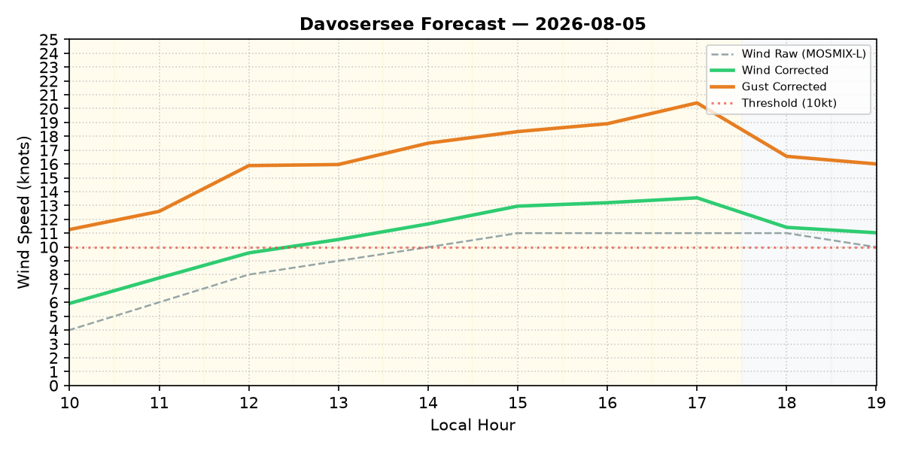
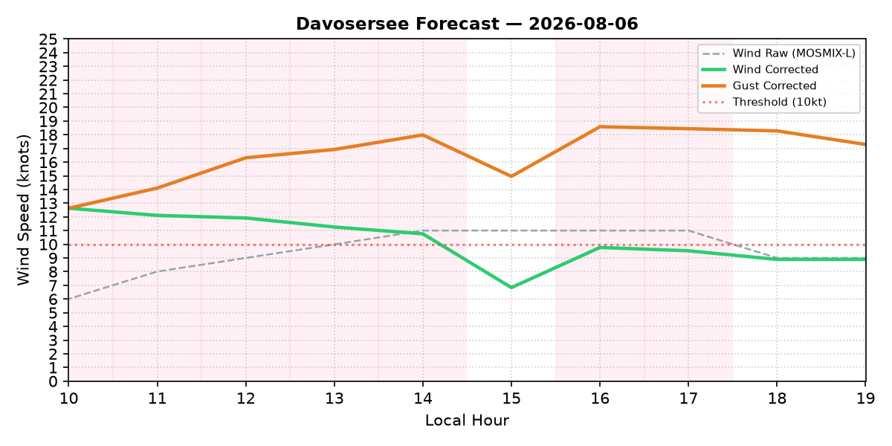

| Time | Wind Raw (kt) | Wind Corr (kt) | Gust Corr (kt) | Wind Dir | Temp (°C) | Cloud (%) | Rain Prob (%) | Foehn Grad (hPa) | Regime |
|---|---|---|---|---|---|---|---|---|---|
| 10:00 | 4.0 | 5.9 | 11.3 | NNE (22°) | 20.0 | 7% | 0% | 1.5 | Sunny |
| 11:00 | 6.0 | 7.8 | 12.6 | NNE (22°) | 21.7 | 11% | 0% | 1.5 | Sunny |
| 12:00 | 8.0 | 9.6 | 15.9 | NNE (26°) | 23.0 | 15% | 0% | 1.2 | Sunny |
| 13:00 | 9.0 | 10.5 | 16.0 | NNE (28°) | 23.7 | 9% | 0% | 1.4 | Sunny |
| 14:00 | 10.0 | 11.7 | 17.5 | NNE (29°) | 24.1 | 9% | 0% | 1.3 | Sunny |
| 15:00 | 11.0 | 13.0 | 18.3 | NNE (28°) | 23.9 | 13% | 13% | 1.6 | Sunny |
| 16:00 | 11.0 | 13.2 | 18.9 | NNE (29°) | 23.4 | 20% | 35% | 1.9 | Sunny |
| 17:00 | 11.0 | 13.6 | 20.4 | NNE (27°) | 22.7 | 26% | 43% | 2.1 | Sunny |
| 18:00 | 11.0 | 11.4 | 16.5 | NNE (20°) | 21.8 | 34% | 13% | 2.6 | PartlyCloudy |
| 19:00 | 10.0 | 11.0 | 16.0 | NNE (16°) | 20.5 | 42% | 5% | 2.8 | PartlyCloudy |

| Time | Wind Raw (kt) | Wind Corr (kt) | Gust Corr (kt) | Wind Dir | Temp (°C) | Cloud (%) | Rain Prob (%) | Foehn Grad (hPa) | Regime |
|---|---|---|---|---|---|---|---|---|---|
| 10:00 | 6.0 | 12.6 | 12.6 | NNE (24°) | 17.0 | 63% | 13% | 4.4 | Foehn + PartlyCloudy |
| 11:00 | 8.0 | 12.1 | 14.1 | NNE (25°) | 18.0 | 66% | 20% | 4.7 | Foehn + PartlyCloudy |
| 12:00 | 9.0 | 11.9 | 16.3 | NNE (25°) | 18.5 | 66% | 30% | 4.6 | Foehn + PartlyCloudy |
| 13:00 | 10.0 | 11.3 | 16.9 | NNE (27°) | 18.5 | 61% | 35% | 4.9 | Foehn + PartlyCloudy |
| 14:00 | 11.0 | 10.8 | 18.0 | NNE (28°) | 18.8 | 59% | 50% | 4.9 | Foehn + PartlyCloudy |
| 15:00 | 11.0 | 6.8 | 15.0 | NNE (32°) | 18.7 | 58% | 55% | 5.2 | Foehn + PartlyCloudy + Precip(Other_Precip) |
| 16:00 | 11.0 | 9.8 | 18.6 | NNE (32°) | 18.2 | 59% | 50% | 5.2 | Foehn + PartlyCloudy |
| 17:00 | 11.0 | 9.5 | 18.4 | NNE (33°) | 17.4 | 64% | 50% | 5.3 | Foehn + PartlyCloudy |
| 18:00 | 9.0 | 8.9 | 18.3 | NNE (29°) | 16.2 | 67% | 38% | 5.5 | Foehn + Cloudy |
| 19:00 | 9.0 | 8.9 | 17.3 | NNE (29°) | 15.6 | 75% | 18% | 5.5 | Foehn + Cloudy |